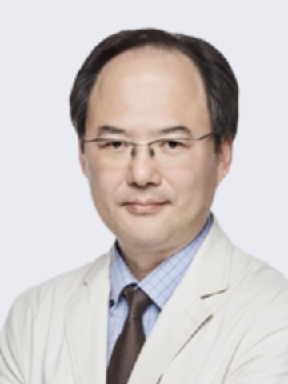

인사말

가톨릭대학교 의과대학 외과학교실 홈페이지를 찾아 주신 여러분을 진심으로 환영합니다.
1957년에 출범한 가톨릭대학교 외과학교실은 선배 교수님들의 헌신과 교실원들의 열정으로 대한민국 외과의 역사를 이끌어 왔습니다. 1969년에는 국내 처음으로 신장이식에 성공했고, 그 뒤로도 복강경 수술을 비롯한 외과 전 분야에서 새로운 길을 열어 왔습니다. 임상과 함께 기초 연구를 꾸준히 이어 온 것도 우리 교실이 쌓아 온 전통입니다.
지금 외과학교실은 서울성모병원을 비롯한 8개 부속병원에서 간담췌외과, 갑상선내분비외과, 대장항문외과, 소아외과, 위장관외과, 유방외과, 중환자외상외과, 혈관이식외과의 8개 분과로 운영됩니다. 전공의와 임상강사를 포함한 교실원 160여 명이 환자를 위한 진료, 다음 세대 외과의사를 기르는 교육, 그리고 연구에 힘쓰고 있습니다.
외과를 둘러싼 환경은 빠르게 바뀌고 있습니다. 우리 교실은 8개 병원이 가진 경험과 자료를 함께 나누고, 전공의와 젊은 외과의사들이 마음껏 배우고 성장할 수 있는 교실을 만들어 가겠습니다. 새로 연 홈페이지가 교실원과 동문, 그리고 외과에 관심을 가진 모든 분들과 교실 소식을 나누는 열린 창구가 되기를 바랍니다.
여러분의 많은 관심과 격려를 부탁드립니다. 감사합니다.
2026년 11월
가톨릭대학교 의과대학 외과학교실
주임교수 조현민